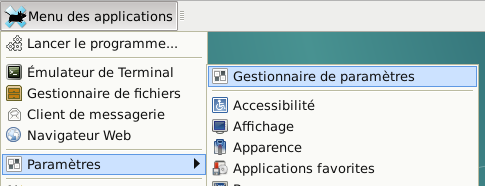
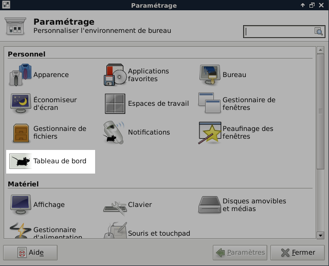
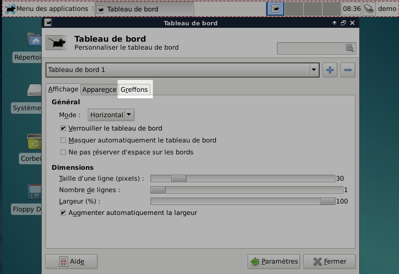
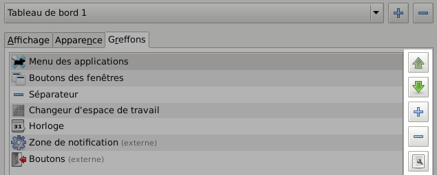
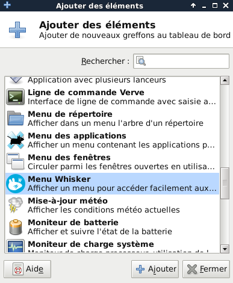
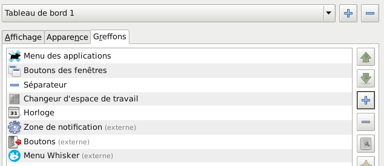
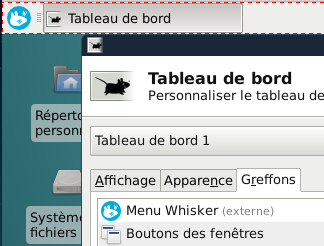

XFCE4 - Menu Whisker
Posté le Dim 28 février 2016 dans linux
Voici comment ajouter Menu whisker à XFCE sous Debian. Il permet de remplacer le menu par défaut par trop à mon gout.
Comme toujours, il faut mettre à jours la base de données d'aptitude avant de commencer.
Etape 1 : installer le plugin whiskermenu
Dans un terminal faites ceci :
sudo aptitude update
sudo aptitude install xfce4-whiskermenu-plugin
Voilà qui est fait, il reste à le mettre en place.
Etape 2 : ouvrir le gestionnaire du tableau de bord
Menu paramètres

Dans le menu choisir : Paramètres.
Chercher après l'item Tableau de bord ou passez par le Gestionnaire de paramètre. Le gestionnaire de paramètres présente les choses plus proprement.
Gestionnaire de paramètres

Les barres de menu sont nommées Tableau de bord, c'est là que l'on peut modifier, ajouter ou supprimer des barres des menus.
Cliquer sur l'icône Tableau de bord.
Gestionnaire de tableaux de bords

Tableau de bord 1 correspond au menu situé en haut de l'écran, le Tableau de bord 2 à celui en bas de l'écran.
Choisissez l'onglet Greffons qui permet de modifier le contenu du tableau de bord sélectionné.

Les boutons latéraux permettent de modifier l'ordre des plugins, d'en ajouter ou supprimer.
Cliquer sur le bouton plus pour passer à la fenêtre suivante.
Ajouter le greffon au tableau de bords

Il n'y a plus qu'à sélectionner Menu Whisker, cliquer sur Ajouter et ensuite Fermer. La fenêtre des greffons devrait être la suivante :

Sélectionner l'item Menu Whisker et faite le remonter avec le bouton flèche haut.
Sélectionner l'item Menu des applications et supprimer le avec le bouton moins.
Vous devriez avoir ceci maintenant.
